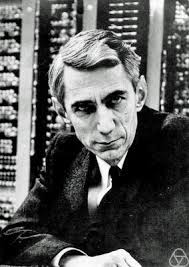

Algemene informatie
Claude Elwood Shannon was geboren op 30 april 1960 en overleden op 24 februari 2001. Hij was een Amerikaans wiskundige en electrotechnicus. Hij werdt daarom ook de "vader van de informatietheorie" genoemd.
Werk
Hij is vooral bekend geworden door de Wet van Shanonn-Hartley. De Wet van Shannon-Hartley zegt dat de maximale hoeveelheid data die foutloos over een kanaal getransporteerd kan worden lineair toeneemt met de bandbreedte van het kanaal en verder afhankelijk is van de signaal-ruisverhouding. Deze wet is vernoemd naar Claude Shannon en Ralph Hartley. De Wet van Shannon-Hartley wordt ook wel Shannonlimiet of Shannoncapiciteit genoemd.
Daarnaast is hij ook bekend geeworden door de informatietheorie.
Informatietheorie bestudeert de kwantificering, opslag en communicatie van informatie. Oorspronkelijk was Claude Shannon in 1948 voorgesteld om fundamentele limieten te vinden voor signaalverwerking en communicatieoperaties zoals datacompressie, in een historisch document met de titel "A Mathematical Theory of Communication". Het veld bevindt zich op het snijvlak van waarschijnlijkheidstheorie, statistiek, informatica, statistische mechanica, informatietechniek en elektrotechniek.